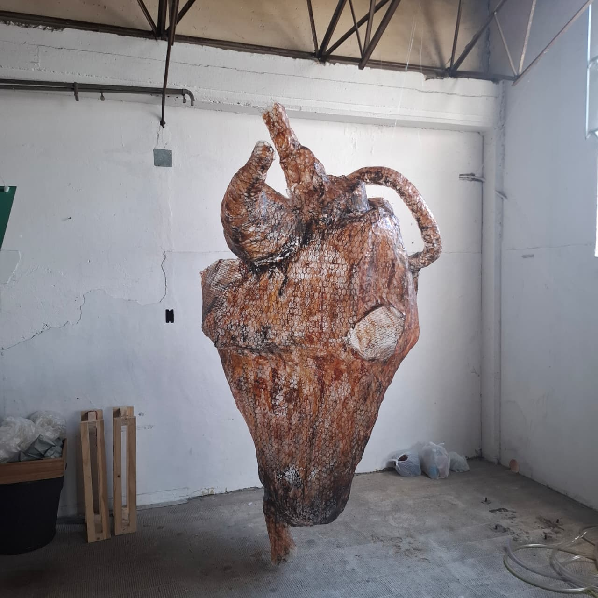

Variante Reconquista

La Variante Reconquista es el nombre dado a la adaptación en el sistema circulatorio presente en los habitantes de la cuenca alta del río Reconquista.
En la Zona Oeste del conurbano bonaerense, el río supura nitrito, una sustancia tóxica, con la llegada de cada verano. Ocurre cuando el agua sufre un golpe de calor, es decir, se mantiene a temperaturas más altas que el ambiente durante varios días, y el aire se vuelve irrespirable.
Los habitantes de la zona cuentan con un sistema circulatorio modificado que les permite sobrevivir en ese ambiente. En el corazón se expande un agujero que conecta el ventrículo izquierdo con el derecho. Por allí la sangre se infecta y circula de un lado al otro del órgano, y se propaga por las venas hasta infectar todo el cuerpo.
La infección, antes considerada una anomalía, funciona como mecanismo de adaptación: conecta los órganos entre sí y vuelve al organismo inmune a la sustancia mientras esta permanece en el aire.